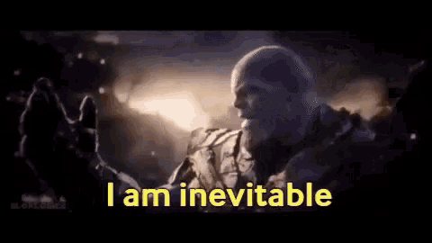

Greetings!*
Welcome to CinR. Here, we beleive that China* is, in fact, not a real country. Our team of 3,000+ researchers and professors have uncovered an inconceivable truth that many historical landmarks you may beleive to be real are actually entirely made up. On this site, you will find more information about this discovery and how you can help support our cause.
Our Discovery
Our team of 2,937 researchers and professors have been travelling the world* to find the true existance of many historical landmarks and places. Upon visiting China, they realised, it didn't exist. Hover over the image below to see what people think China is vs. what it really is:
China is actually lies and propoganda* And if this isn't shocking enough, the pyramids don't exist either. Nor do deserts, Antarctica, The Colosseum and more.
List of Lies and Propoganda:
- China
- Humanity
- The Pyramids
- Deserts
- The Colosseum
- The Eiffel Tower
- The Grand Canyon
- Hawaii
- Mount Everest
- Stonehenge
- The Statue of Liberty
- The Leaning Tower of Pisa
- The Amazon Rainforest
- The North Pole
- Easter Island
- The Moon
- Good Clash Royale Updates
- Australia
- Hurricane Ike
- Round Earth
Our Mission
Our mission is to inform the world of this great misconception. You can help us spread the word by trying out our imersive experience. Many spies died to bring us this information, so the least we can do is spread their work.
Who Are We?
We are China disbelivers. We love Mr Johnstone. We are inevitable. WE SHALL CRUSH ALL WHO STAND IN THE WAY OF US!
